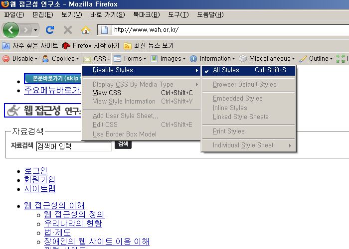

점검 방법 및 준수/위반 사례
이전
목차
다음
파이어폭스 + 부가기능 Web Developer 툴바
2-5. 반복 내비게이션 링크
점검 가능 지표
반복되는 링크를 건너뛸 수 있도록 건너뛰기 링크(skip navigation)를 제공해야 한다.
점검 방법 설명
파이어폭스 [도구]-[Web Developer]-[CSS]-[Disable Styles]-[All Styles] 를 선택하여
CSS 제거한 화면에서 최상단에 본문 바로가기 링크 등이 있는지 확인한다.
